Built to solve real problems.
A visual look at applications and automations I've developed—from tracking workflows to AI-assisted customer support and market monitoring.
Ideas → working systems
Selected work
Start simple. Explore the details when you need them.
JobTrack
A clearer way to manage a job search.
02 / SMALL-BUSINESS AUTOMATIONCustomer Inquiry Automation
From customer inquiry to organized follow-up.
03 / AI + WORKFLOW ENGINEERINGAI Customer Support Automation
AI triage with guardrails and human oversight.
04 / PYTHON + DATA AUTOMATIONIDX Market Monitoring Tools
Less manual checking. More structured market data.
JobTrack
A clearer way to manage a job search.
A Laravel application for organizing job applications, tracking progress, and finding records with search and status filters.
PHP · Laravel · MySQL · Blade · Git · NativePHP
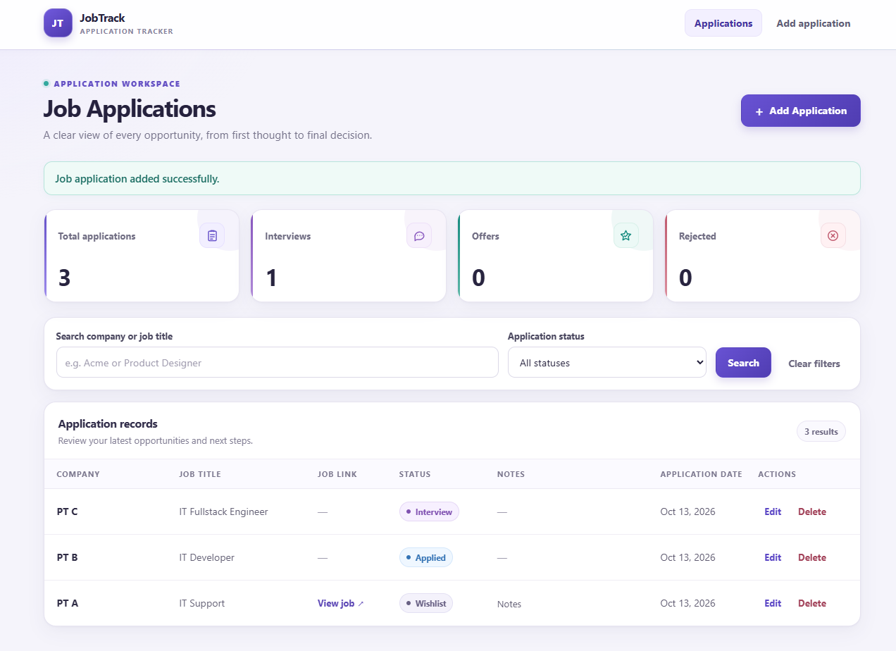
jobtrack-dashboard.png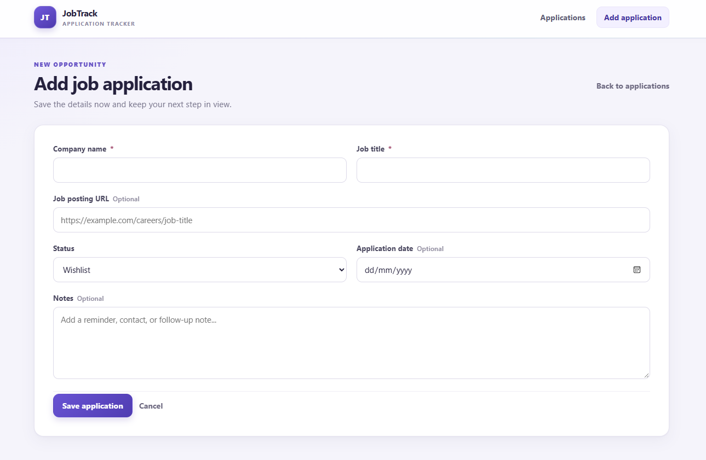
jobtrack-form.png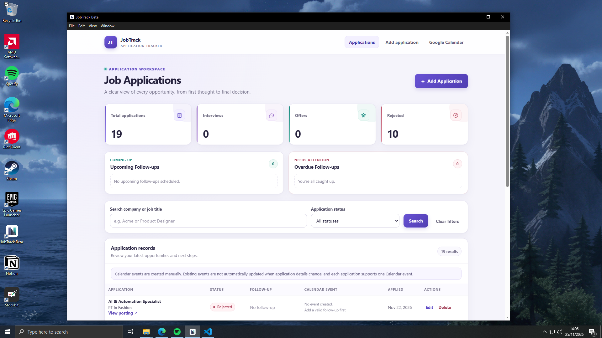
jobtrack-desktop.pngWhat I built
- Create, edit, and delete job applications
- Search by company or role and filter by status
- Paginated application list and clear empty states
- Automated feature/unit test coverage
- Desktop packaging explored with NativePHP
Evidence & limits
29 automated tests passed during development
Desktop work was a separate packaging effort; do not imply a public installer exists unless you publish one.
Customer Inquiry Automation
From customer inquiry to organized follow-up.
A customer form feeds a validated inquiry workflow, stores the request in Google Sheets, and alerts the business owner through Telegram.
n8n · Google Sheets · Telegram · Webhooks · JavaScript
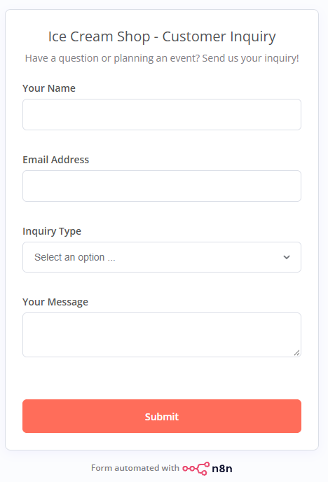
icecream-form.png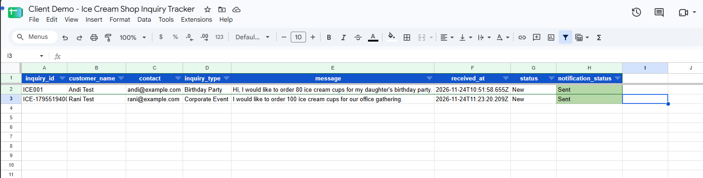
icecream-sheet.png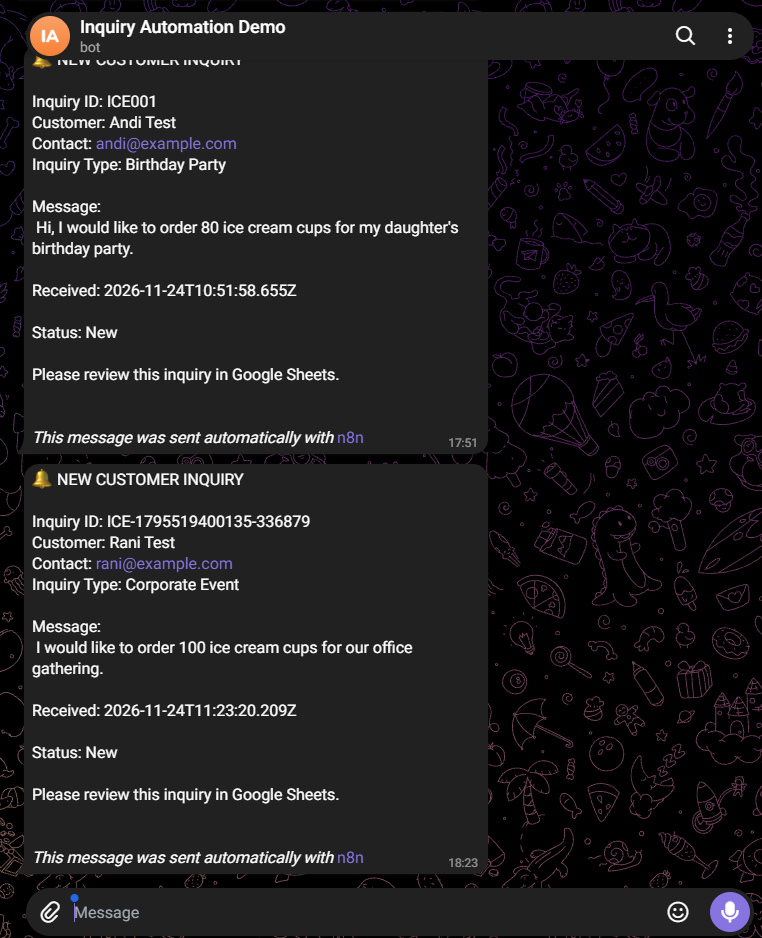
icecream-telegram.pngWhat I built
- Customer-facing inquiry form with generated tracking ID
- Input validation and sequential duplicate checks
- Structured Google Sheets inquiry tracker
- Telegram notification and status tracking
- Separate failure branch to preserve recorded inquiries
Evidence & limits
Locally tested: new inquiry, duplicate suppression, successful send, and Telegram failure
Local demonstration only; not represented as a hosted public service. Sequential duplicate protection is not atomic.
AI Customer Support Automation
AI triage with guardrails and human oversight.
A support intake pipeline classifies inquiries, validates outputs, routes tickets to teams, and escalates uncertain or conflicting decisions for review.
n8n · JavaScript · Ollama · LLMs · Webhooks · APIs
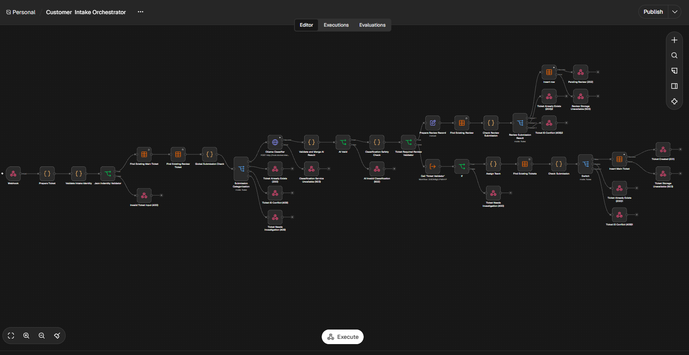
ai-workflow.png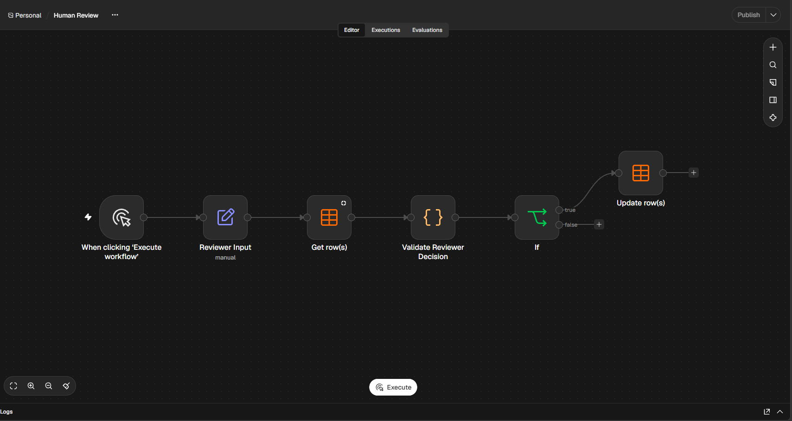
ai-review.png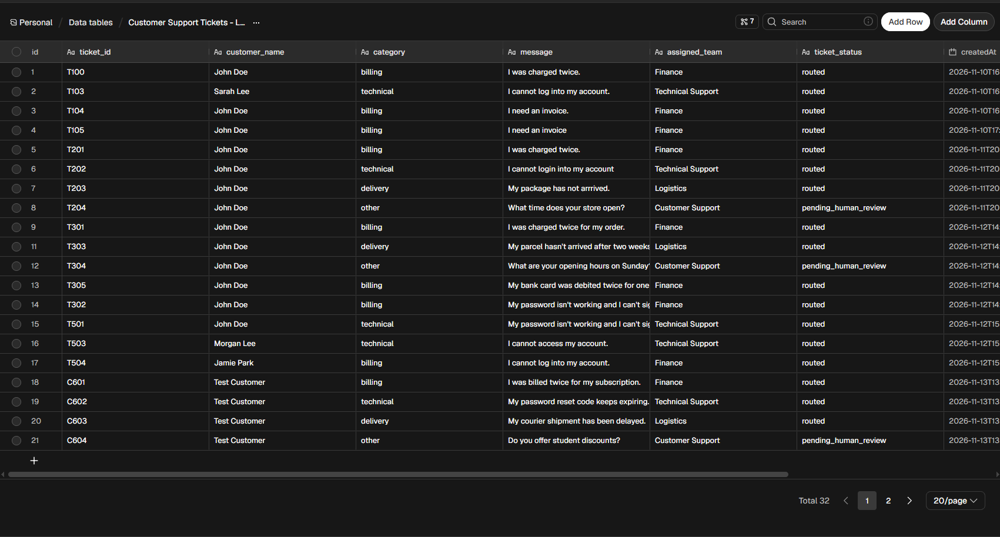
ai-results.pngWhat I built
- Structured category, priority, and team-routing logic
- Validation, normalization, and invalid-output handling
- Human review, correction, approval, and rejection paths
- Duplicate/conflict protection and recovery scenarios
- Failure simulation and audit-oriented workflow design
Evidence & limits
Tested scenarios include conflicting classification, human correction, repeated approvals, and recovery safeguards
AI predictions are not guaranteed correct; the project deliberately uses validation and review paths.
IDX Market Monitoring Tools
Less manual checking. More structured market data.
Python scripts that monitor publicly available Indonesian market disclosures and produce easier-to-review summaries and change reports.
Python · Web scraping · Excel · Telegram · PDF
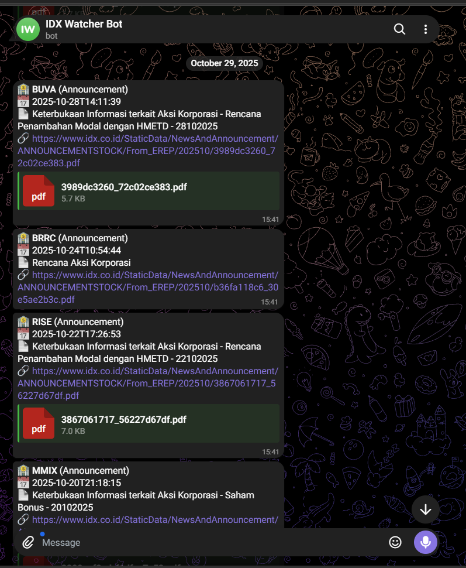
idx-actions.png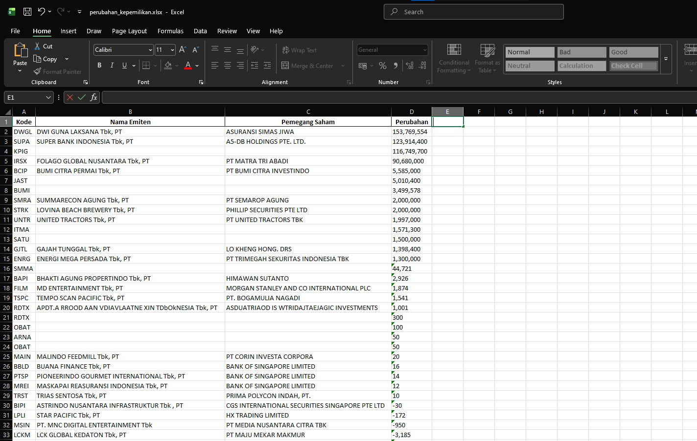
idx-ownership.pngWhat I built
- Corporate-action monitoring with Telegram and PDF output
- Daily above-5% ownership disclosure monitoring
- Comparison of successive disclosures to identify changes
- Structured Excel output for manual review
Evidence & limits
Two distinct proof-of-concept scripts with report and alert outputs
Outputs are research aids, not investment advice; site format or accessibility may change.